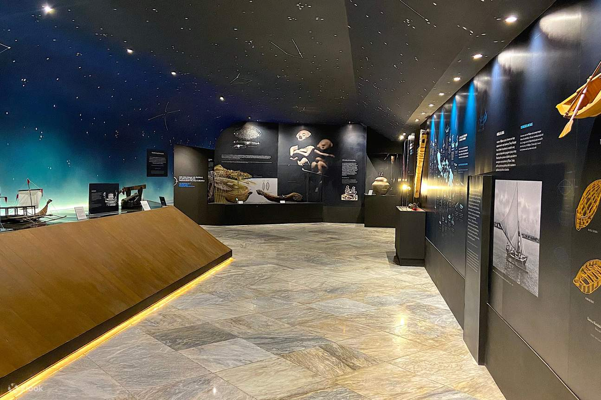

The National Historical Commission of the Philippines Museum of Philippine Maritime History in Iloilo City is a museum dedicated to showcasing the rich maritime heritage of Western Visayas region. The museum is located in Ground Floor, Iloilo Customs House and provides a comprehensive look at the region’s seafaring history, from ancient times to present. The museum houses an impressive collection of artifacts and exhibits, including maps, navigational instruments, ship models, and more, that illustrate the region’s most important role in the region’s maritime trade and commerce. With interactive exhibits and educational programs, the Museum of Philippine Maritime History in Iloilo City is an ideal destination for those interested in exploring the region’s maritime past and learning more about the important role that the sea has played in shaping the cultural and historical heritage.
This is the sidebar content.